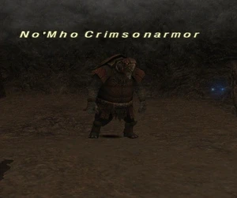

Level 75 reference · Zenith rules
|
Job: Paladin Notorious Monster |
 |

| Zone | Level | Drops | Steal | Spawns | Notes |
|---|---|---|---|---|---|
| Palborough Mines | 22-23 | 1 | A, L, H | ||
HP = Detects Low HP; M = Detects Magic; Sc = Follows by Scent; T(S) = True-sight; T(H) = True-hearing JA = Detects job abilities; WS = Detects weaponskills; Z(D) = Asleep in Daytime; Z(N) = Asleep at Nighttime | |||||

Notes:
- Timed Spawn from the room at G-10 approximately every 21-24 hours.
- Killable by: Solo at level 35
Adapted from Eden Wiki: No'Mho Crimsonarmor · Contributors and history · CC BY-SA 4.0. Revision 46931. Layout, links and optional background text adapted for Zenith.